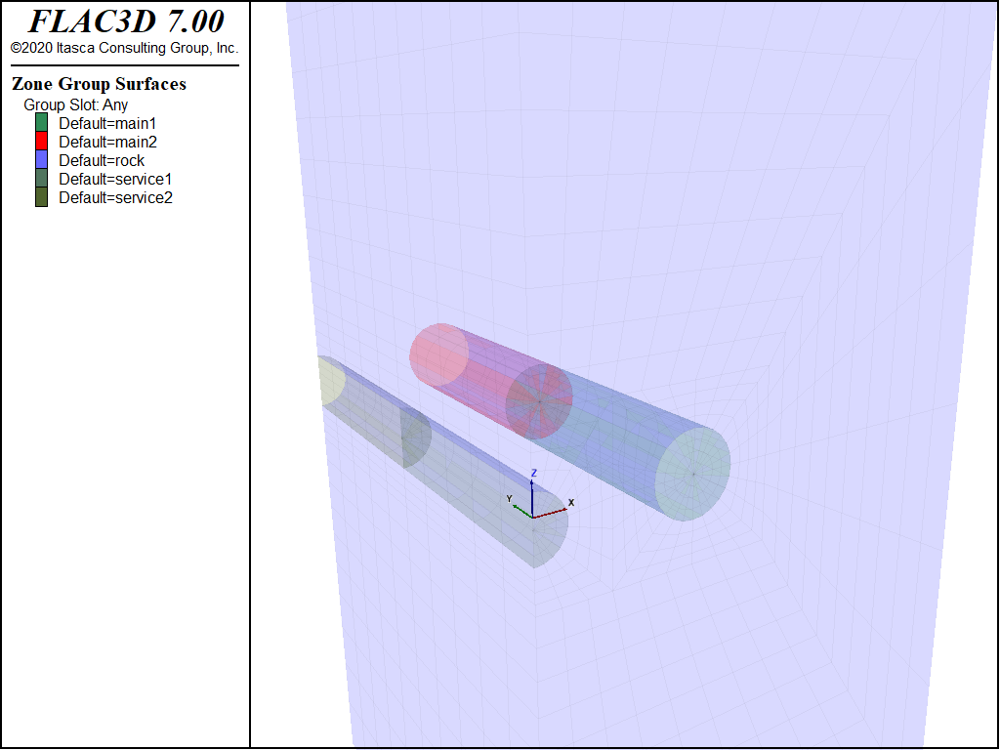
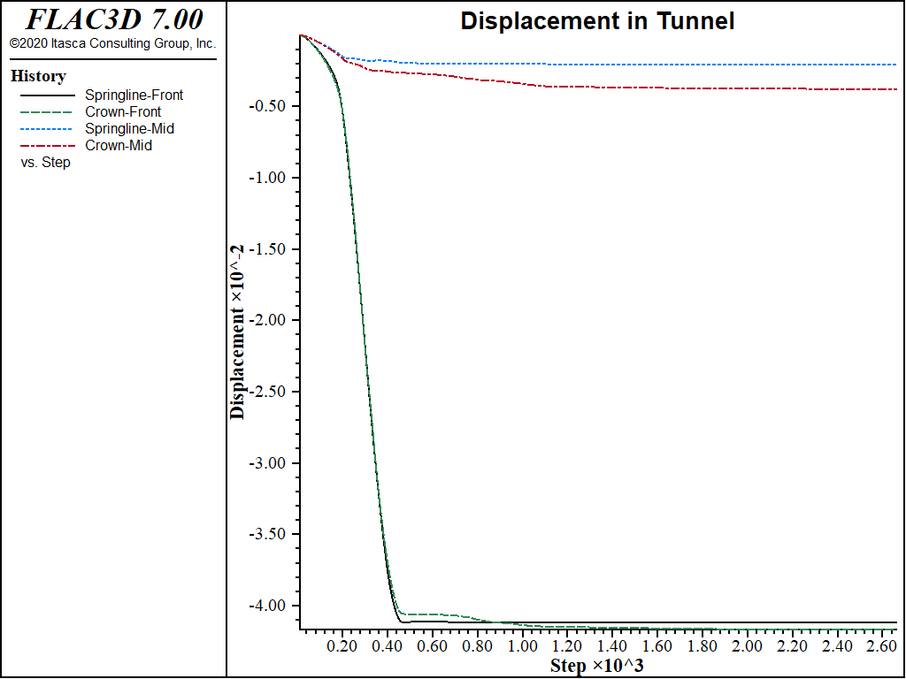
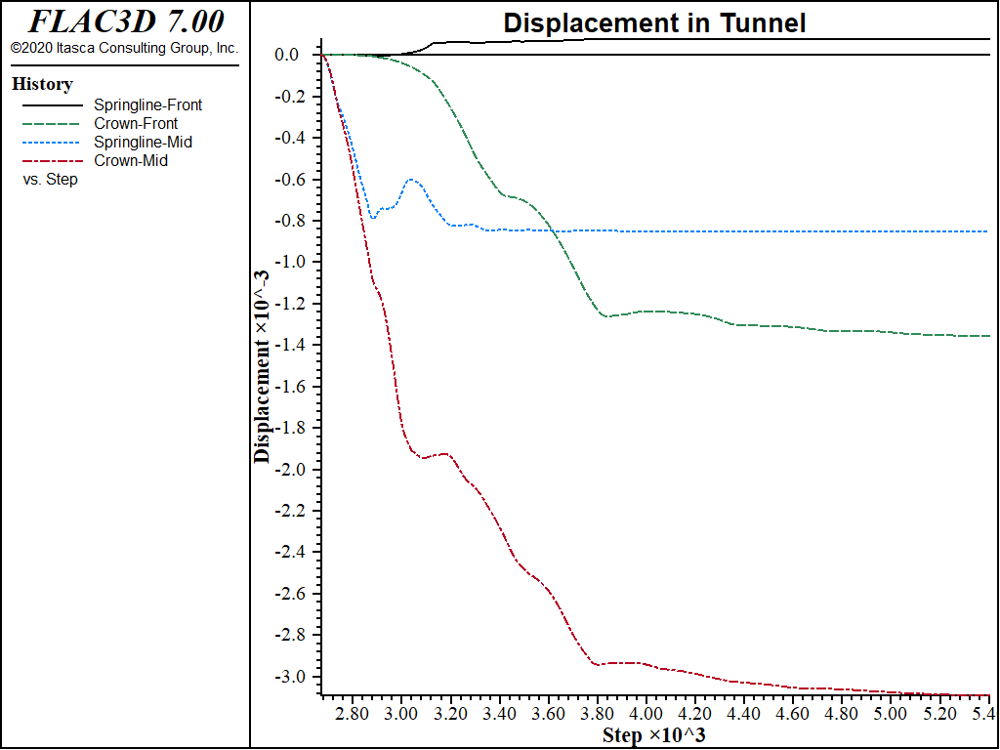
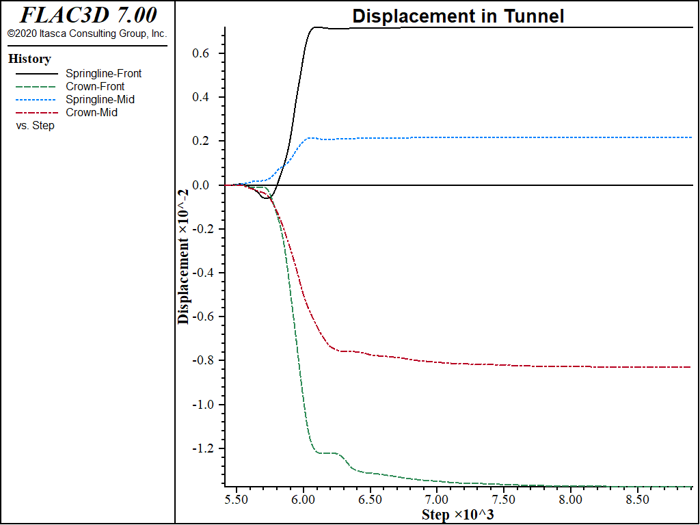

加载与顺序建模
通过在分析不同阶段施加不同的模型加载条件，可以模拟开挖和施工顺序等物理荷载变化。可以通过多种方式指定加载变化（例如，施加新的应力或位移边界，将网格单元材料模型改为空材料或其他材料模型，或者改变材料性质）。
必须认识到，顺序建模遵循工程施工的各阶段（例如板桩墙开挖和施工阶段）。但这种建模不以物理时间为参数，不能模拟与时间有关的行为。[1]需要通过工程判断估计时间的影响。例如，可以在发生预定大小的位移或应变后改变某模型参数，并估计该位移发生于给定时段内。
执行加载变化或定义顺序分析阶段时，应遵循以下指导原则：
- 如网格生成（Grid Generation）一节所述，所有待开挖区域都必须与创建时建立的网格单元边界对应。网格单元和网格点创建后可以移动，但其应力状态不会因新构型而调整；应力仅随循环过程中的速度增量改变。
- 循环之后可以创建网格单元和网格点，例如向坝体添加材料。但与所有新建网格单元一样，这些网格单元初始应力为零，且没有本构模型。
- 一般而言，开挖应使用 单元松弛开挖（
zone relax excavate），以尽量减小伪惯性效应对解的影响。- 在模拟顺序中改变材料模型时，必须为新模型重新指定所有性质，即使受影响网格单元先前已被赋予相同性质。更改模型时，性质会丢失。更改模型时网格单元中的应力保留，除非将其改为空网格单元；此时受影响网格单元中的全部应力均设为零。
- 如果模型已平衡，改变弹性性质不会影响模型响应，因为弹性模量是切线模量，而非割线模量。必须使模型发生会产生不平衡力的变化。例如，如果当前应力超过新的强度极限，改变强度性质就可能产生不平衡力。
本主题后的示例演示了建议采用的顺序建模方法。
示例：三条隧道的荷载
本问题分析依次开挖并施作衬砌的三条隧道（一条辅助隧道和两条主隧道）上的荷载。本问题的网格生成已在前文使网格适应简单形状（Fitting the Grid to Simple Shapes）中介绍。
待分析施工顺序包含三个建模阶段：
- 开挖辅助隧道的前半段；然后
- 在前半段安装衬砌，并开挖辅助隧道的后半段；然后
- 在辅助隧道后半段安装衬砌，并开挖主隧道的前半段。
分析目的是研究主隧道开挖对辅助隧道响应的影响。
模型利用了问题的对称性。辅助隧道位于两条主隧道的中间，因此可以假定沿辅助隧道中心线存在竖直对称面。以下数据文件创建模型网格。
隧道顺序开挖与衬砌——初始网格
model new
; 主隧道
zone create radial-cylinder point 0 (15, 0,0) point 1 (23,0,0) ...
point 2 (15,50,0) point 3 (15,0,8) ...
size 4 10 6 4 dim 4 4 4 4 rat 1 1 1 1 ...
group 'rock' fill group 'main1'
zone reflect dip 90 dip-direction 90 origin (15,0,0)
zone reflect dip 0 origin (0,0,0)
; 服务隧道——创建两个网格点作为参考位置
zone gridpoint create (2.969848, 0.0,-0.575736) name='ref1'
zone gridpoint create (2.969848,50.0,-0.575736) name='ref2'
zone create radial-cylinder point 0 (0, 0,-1) point 1 (7, 0,0) ...
point 2 (0,50,-1) point 3 (0, 0,8) ...
point 4 (7,50, 0) point 5 (0,50,8) ...
point 6 (7, 0, 8) point 7 (7,50,8) ...
point 8 gridpoint 'ref1' ...
point 10 gridpoint 'ref2' ...
size 3 10 6 4 dim 3 3 3 3 rat 1 1 1 1 ...
group 'rock' fill group 'service1'
zone create radial-cylinder point 0 (0, 0,-1) point 1 (0, 0,-8) ...
point 2 (0,50,-1) point 3 (7, 0, 0) ...
point 4 (0,50,-8) point 5 (7,50, 0) ...
point 6 (7, 0,-8) point 7 (7,50,-8) ...
point 9 gridpoint 'ref1' ...
point 11 gridpoint 'ref2' ...
size 3 10 6 4 dim 3 3 3 3 rat 1 1 1 1 ...
group 'rock' fill group 'service1'
; 外边界
zone create radial-tunnel point 0 ( 7, 0, 0) point 1 (50, 0, 0) ...
point 2 ( 7,50, 0) point 3 (15, 0,50) ...
point 4 (50,50, 0) point 5 (15,50,50) ...
point 6 (50, 0,50) point 7 (50,50,50) ...
point 8 (23, 0, 0) point 9 ( 7, 0, 8) ...
point 10 (23,50, 0) point 11 ( 7,50, 8) ...
size 6 10 3 10 rat 1 1 1 1.1 group 'rock'
zone create brick point 0 ( 0,0, 8) point 1 ( 7, 0, 8) point 2 (0,50, 8) ...
point 3 ( 0,0,50) point 4 ( 7,50, 8) point 5 (0,50,50) ...
point 6 (15,0,50) point 7 (15,50,50) ...
size 3 10 10 rat 1 1 1.1 group 'rock'
zone reflect dip 0 origin (0,0,0) ...
range position-x 0 23 position-y 0 50 position-z 8 50
zone reflect dip 0 origin (0,0,0) ...
range position-x 23 50 position-y 0 50 position-z 0 50
zone group 'main2' range group 'main1' position-y 25 50
zone group 'service2' range group 'service1' position-y 25 50
zone face group 'liner1' internal range group 'service1' group 'rock'
zone face group 'liner2' internal range group 'service2' group 'rock'
zone face skin
model save 'grid'
所得网格见下图。对网格进行调整，使辅助隧道仰拱与主隧道仰拱处于同一高程（见使网格适应简单形状（Fitting the Grid to Simple Shapes））。


图 1：主隧道与辅助隧道的 FLAC3D 网格。
初始时，为所有网格单元定义 Mohr-Coulomb 材料模型。指定对称面，并为模型赋予各向同性初始应力。开挖前模型处于力平衡。请注意，发出 求解模型（model solve） 命令后仅进行一个计算步，因为在指定边界和初始条件下模型已处于平衡。下一清单给出此阶段的命令。
隧道顺序开挖与衬砌——初始状态
model restore 'grid'
; 摩尔–库仑模型
model large-strain off
zone cmodel assign mohr-coulomb
zone property shear 0.36e9 bulk 0.6e9 cohesion 1e5 friction 20 tension 1e5
; 边界条件
zone face apply velocity-normal 0 range group 'Bottom'
zone face apply velocity-normal 0 range group 'East' or 'West'
zone face apply velocity-normal 0 range group 'North' or 'South'
zone face apply stress-normal -1.4e6 range group 'Top'
; 初始条件
zone initialize stress xx -1.4e6 yy -1.4e6 zz -1.4e6
; 历程
model history name='conv' mechanical convergence
zone history name='s-f' displacement-x position (3,0,-1)
zone history name='c-f' displacement-z position (0,0,2)
zone history name='s-m' displacement-x position (3,25,-1)
zone history name='c-m' displacement-z position (0,25,2)
model solve convergence 1
model save 'initial'
第一阶段，在开挖 25 m 长辅助隧道段后求解。使用 单元松弛开挖（zone relax excavate） 命令开挖。[2]第一阶段命令如下。
隧道顺序开挖与衬砌——阶段 1
; 开挖服务隧道中长 25 m 的区段
model restore 'initial'
zone relax excavate range group 'service1'
model solve convergence 1
model save 'stage1'
下图中辅助隧道起拱线和拱顶位移的网格点历程表明，第一阶段约 2500 个计算步后模型达到平衡。


图 2：阶段 1 辅助隧道拱顶和起拱线的位移历程。
第二阶段，沿辅助隧道已开挖部分安装衬砌。采用结构壳单元模拟衬砌，并假定衬砌为弹性。在位于网格对称面上的结构单元节点处指定固定条件，使衬砌具有相同的对称条件。
随后开挖辅助隧道第二个 25 m 长隧道段，并计算衬砌提供支护时的解，如下所示：
隧道顺序开挖与衬砌——阶段 2
model restore 'stage1'
zone gridpoint initialize displacement (0,0,0)
history purge
; 开挖服务隧道的后半段
zone relax excavate range group 'service2'
; 在服务隧道的前半段安装衬砌
struct shell create by-zone-face range group 'liner1'
struct shell property isotropic (25.3e9,0.266) thick 0.5
; 壳单元的对称边界条件
struct node fix velocity-y rotation-x rotation-z range position-y 0
struct node fix velocity-x rotation-y rotation-z range position-x 0
; 求解至平衡
model solve convergence 1
model save 'stage2'
将模型位移初始化，以便只关注第二阶段开挖造成的响应。辅助隧道已衬砌部分两端（即 y = 0 和 y = 25）的位移历程表明，开挖辅助隧道其余部分导致其产生非对称响应。


图 3：阶段 2 辅助隧道拱顶和起拱线的位移历程。
接着，对辅助隧道第二段施作衬砌，并开挖主隧道第一段。
隧道顺序开挖与衬砌——阶段 3
model restore 'stage2'
zone gridpoint initialize displacement (0,0,0)
history purge
; 开挖主隧道的前半段
zone relax excavate range group 'main1'
; 在服务隧道的后半段安装衬砌
struct shell create by-zone-face range group 'liner2'
struct shell property isotropic (25.3e9,0.266) thick 0.5
; 壳单元的对称边界条件
struct node fix velocity-y rotation-x rotation-z range position-y 50
struct node fix velocity-x rotation-y rotation-z range position-x 0
; 求解至平衡
model solve convergence 1
model save 'stage3'
再次初始化位移，以便观察主隧道开挖的影响。辅助隧道中测得的位移明显大于前两个阶段，响应也更加不对称。网格中的位移大小等值线，以及衬砌中的最小（即最大压）主应力（σ1）等值线也清楚体现这一点（见下方第二幅图）。


图 4：阶段 3 辅助隧道拱顶和起拱线的位移历程。

图 5：主隧道部分开挖后，网格中的位移大小和衬砌中的最小主应力等值线图。
可以在不同材料性质条件下，或不同主隧道与辅助隧道相对位置下，重复该建模顺序。如果研究新的隧道位置，必须重新生成网格，并使模型再次达到初始平衡状态。如果采用不同材料性质，必须先求解未衬砌辅助隧道的响应。始终记住，改变荷载时模型必须处于平衡状态。
尾注
| [1] | 该方法是对隧道逐步推进的简化模拟。更真实的隧道顺序施工模型见浅埋隧道的开挖与支护（Excavation and Support for a Shallow Tunnel）。 |
| [2] | 当然，此处所指的是静态力学过程。FLAC3D 可对地下水流、蠕变和热分析进行瞬态计算。使用动力分析（Dynamic Analysis）所述动力选项，还可进行动力分析。 |
| 这些内容对您有帮助吗？… | FLAC3D © 2019, Itasca | 原文更新于 2020 年 10 月 8 日 |